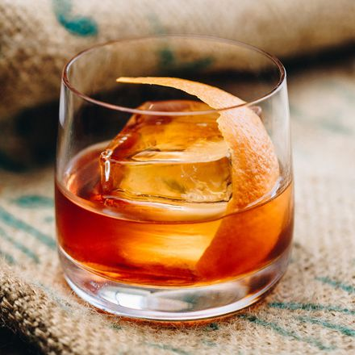

Old fashioned

Description
When you get right down to it, the Bourbon Old Fashioned is little more than a slug of whiskey, seasoned and sweetened.
Yet for all of its suave simplicity, the drink remains as relevant today as it was when it first captured drinkers hearts 200 years ago.
ingridients
- 1/2 teaspoon sugar
- 3 dashes Angostura bitters
- 1 teaspoon water
- 2 ounces bourbon
- Garnish: orange peel
Steps
- Add the sugar and bitters to a rocks glass, then add the water, and stir until the sugar is nearly dissolved.
- Fill the glass with large ice cubes, add the bourbon, and gently stir to combine.
- Express the oil of an orange peel over the glass, then drop in.